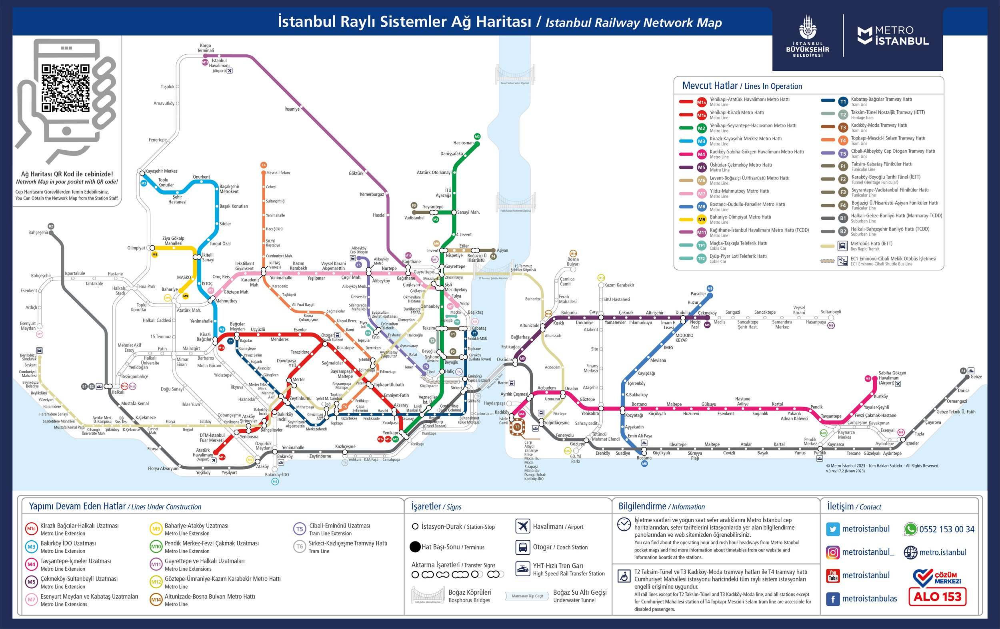

Summary:
The metro and ferries are the best public transit options
Google Maps works, but Moovit has much better coverage for ferry routes
Avoid relying on taxis unless absolutely necessary
Uber calls taxis and you will likely have an excessive wait
Avoid minibuses (light blue buses on Google Maps)
If you don’t like my guide, you can read more about getting to and from the airport here
If you don’t like my guide, you can read more about public transit here
General Information
Istanbul has a very well-developed public transit system. It spans the Bosphorous Strait to connect both sides of city and connects both passenger airports (IST and SAW) to the city center. Public transit, especially the ferries and metro, are the best way to get around the city due to rush hour traffic. The metro system covers all of the main touristic areas of the city and is easy to use. On weeknights most public transit shuts down around midnight, so plan on staying near your hotel if you want to go out late. Google Maps does a good job of providing routes and even has several privately owned airport bus companies listed. Almost all of the public transit can be accessed using an IstanbulKart that can be purchased from and reloaded at yellow kiosks in metro stations. In tourist areas, you’re more likely to find kiosks that have an English option. Each connection you use will incur a new charge, so make sure your IstanbulKart is loaded up. And importantly, most IstanbulKart machines cannot take bills larger than 100 TL! Each leg of a journey will probably cost ~10TL
Modes of Transit
Metro

The metro system in Istanbul is clean and easy to use. It functions just like the metro lines in most major cities. Expect trains every 5-10 min in most cases. Trains run from 6:00 AM to midnight, but there is uninterrupted 24-hour service with trains every 30 min Friday and Saturday night. This should be one of your primary ways of getting around the city. There is only one metro line that crosses the Bosphorous Strait, the Marmaray (gray line). This line is more expensive.
Ferries
Ferries in Istanbul are fully integrated into the public transit network, so you can use your IstanbulKart to board them. They are very convenient, and should also be one of your primary modes of transportation. They are automatically included in Google Maps routes and marked with a blue boat sign. At many of the ferry stations, there will be several wharfs with different ferries. For the busiest ferries, there can even be two docks running the same route at staggered intervals. Make sure you are getting on the right one by checking the signs! Public ferry schedules can be found here: https://sehirhatlari.istanbul/en/timetables . There are also private ferries (which can still be accessed using your IstanbulKart), but these are not included in Google Maps. Roughly half of the ferries moving on major routes are operated by private companies. If you see a ferry on Google Maps that’s running on the :00 and :30 marks, there is probably another dock nearby with a private ferry that leaves on the :15 and :45 marks. Private ferries are included in the Moovit app.
Buses
There are three types of buses in Istanbul that might be included in your route.
Standard city buses: These are big yellow and black buses, and they have a yellow bus symbol on Google Maps. You pay when you get on. Most buses will stop running before midnight.
Metrobuses: These have a beige bus symbol on Google Maps. These buses have their own lanes and move pretty quickly. You pay when you enter the station as if it were a metro.
Minibuses: These are tiny death traps with no ventilation. They are marked with a light blue bus symbol on Google Maps. I recommend not using them because they only take cash and you have to tell them your destination.
Taxis
Avoid taxis unless absolutely necessary. They are notorious for scamming people, often do not speak English, and will not know how to get to your destination. Many taxis are cash only. If you have to take a taxi, make sure the meter is running as soon as you get in the cab, and pull up the route on your phone so that you see if they make any detours. There may be additional fees associated with crossing the bridges, but these should be small (~20 TL).
Getting to/from the Airport
Both Istanbul airports (IST and SAW) are a ways outside the city, so it can take some time to get to the city center where your hotels probably are.
There are several ways you can get to/from the airport. The easiest way is going to be getting your hotel to call you an airport shuttle. Note that the wedding venue (A11 Hotel Bosphorus) provides an airport shuttle. You also might be able to save yourself a few dollars by booking a shuttle yourself with a private shuttle service such as https://airporttransfer.vip/ . This should cost ~€40. I’ve seen good reviews for this service, but I haven’t used it personally. Driving directly to your hotel should take ~45 min, but traffic can add up to an hour if you’re landing during rush hour.
Another way is to take an airport bus. There are private companies that offer reliable service between the airport and popular destinations in Istanbul. These run 24/7, but at 30-60 min intervals. The most popular is Havaist, which leaves from the -2 floor of the IST airport https://istanbul-international-airport.com/transportation/bus/ . If you are staying in Uskudar, you can take the Havaist bus to Kadikoy, followed by the metro from Kadikoy to Uskudar. This is two stops, but requires changing lines at the first stop. The total cost of this trip will be ~$7, not including buying an IstanbulKart to use the public transit. You can also take the Havaist bus to Besiktas and take a ferry from Besiktas to Uskudar.
The airports also connects directly to the metro system. You can connect to either the historic areas of Istanbul or Uskudar, but it will require several transfers, and take slightly longer than the Havaist bus. You can get to Uskudar by taking the M11-M7-M2-Marmaray route. Most other areas of the city—such as Galata and Eminonu—are accessible via the M2 line without crossing the Bosphorous using the Marmaray. Some of the stations are quite large, and it may not be desirable to lug around a ton of bags.